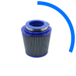
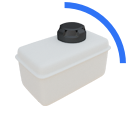
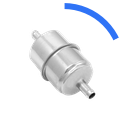
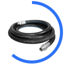
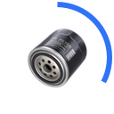
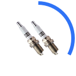
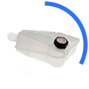
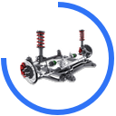
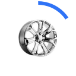

0
Learn the ins and outs of what's under the hood.
Click on the pulsing circles to reveal exactly what each auto part does and what to look out for if they don't seem to be working properly. You'll discover the general cost of fixing/replacing the different parts and also the importance of giving your car a regular service. This means that next time you need your car serviced, you'll know exactly what you're paying for and better yet if you find yourself broken down, you can tell roadside assist what part you need help with.
×

Air Filter
$19 - $133
FUNCTIONS
WHY TO SERVICE
SYMPTOMS
Prevents dangerous debris, such as dirt, from entering the engine to keep the car running smoothly in any terrain.
Air filter may begin to lose function after collecting and blocking debris over a period of time, replacing the filter ensures the engine will remains obstruction-free.
* Decrease in fuel efficiency
* Engine fails to start up easily
* Service Engine light appears due to dirt deposits
FUNCTIONS
WHY TO SERVICE
SYMPTOMS
Battery provides electrical power to start engine and to power additional components: lights, fuel-pump, ignition, when charging system has been overrun.
The car engine may cut suddenly whilst you are driving, leaving you in possible danger or in an accident.
* Car takes longer to start or doesn't start at all
* Battery light is illuminated
* Low Battery fluid level
FUNCTIONS
WHY TO SERVICE
SYMPTOMS
When the brake pedal is pressed, hydraulic fluid is released which applies pressure to the brake disc. This pressure created causes friction which slows down and stops the vehicle.
Brakes are an integral part of driver safety, therefore if they are left without being replaced, you could find yourself on the road unable to slow down. This could lead to a serious accident.
* Loud, high pitched screeching when braking
* Brake pedal vibration when pushed
* Vehicle pulling to one side when braking
* Brake system warning lights
×

Brake Fluid
$120 - $245
FUNCTIONS
WHY TO SERVICE
SYMPTOMS
Brake fluid, also known as hydraulic fluid, allows the components of the braking system to to move so that you can slow down and stop the car.
Brake fluid can begin to absorb moisture from the air over time, leading to corrosion of the braking system. This is key to driver safety, so needs to be replaced in accordance with your owner manual.
* Increase in stopping distances
* Burnt odor from fluid
* Having to push brake pedal to the floor
* Brake system warning light is on
* Fluid is muggy and not clear
FUNCTIONS
WHY TO SERVICE
SYMPTOMS
Coolant is a mixture of distilled water and alcohol that circulates around the engine to cool and regulate its temperature.
Coolant is vital in ensuring that the engine does not overheat and lead to complete engine damage. Coolant is also resistant to freezing and therefore protects your car and components in cold temperatures.
* Temperature gauge is higher than normal
* Leak of coolant fluid
FUNCTIONS
WHY TO SERVICE
SYMPTOMS
The drive belt is a rubber belt that provides power from the engine to various functions in the car including the air conditioning and power steering.
Without drive belts, your alternator would not be able to provide charge to the battery, your power steering would fail to operate, and your car may even overheat.
* Loud squeaking noise from front of vehicle
* Loss of power steering
* Engine overheating
* Air conditioning fails
* Cracks on the belt on inspection
FUNCTIONS
WHY TO SERVICE
SYMPTOMS
Allows for the removal of gases that build up within the engine to control noise and increase engine performance.
Unknown to many, but replacing the exhaust can improve fuel efficiency as the engine to able to release fumes and maintain a lower temperature.
* Hissing sound caused by crack in exhaust pipe
* Chugging or ticking sound from area around the engine
* Rust formed internally due to condensation build-up leading to structural weakness
* Reduced fuel efficiency
×

Fuel Filter
$60 - $85
FUNCTIONS
WHY TO SERVICE
SYMPTOMS
Filters the fuel by clearing out harmful dirt particles before reaching the fuel injection system.
Replacing the fuel filter ensures that the engine continues to run smoothly. If the filter is left for a long period of time, it can lead to your car failing to start.
* Increased fuel consumption
* Lack of power when accelerating leading to difficulty driving at slow speeds
* Shaking feeling from engine when stationary
×

Fuel Hose
$85 - $370
FUNCTIONS
WHY TO SERVICE
SYMPTOMS
Fuel hoses are commonly made from a rubber material and allow engine fuel to be transported from one area of the vehicle to another.
If a fuel hose begins to deteriorate and crack, it can lead to serious problems due to the high flammability of fuel should it leak.
* Fuel leaking under your car
* Gasoline odor from vehicle
* Visible cracks on the hose
×

Oil Change
& Filter
$110
FUNCTIONS
WHY TO SERVICE
SYMPTOMS
Car oil works to lubricate the mechanics within the engine and absorb the heat produced. The oil filter removes contaminants from the oil before it is used.
Without an oil change, the engine will begin to break down as it is unable to extract heat and remain lubricated.
* Check the colour; the oil should be a light brown colour. If the oil has become thick and dark you will need to change it
* Gritty oil. If you rub some of the oil between your fingers and it feels coarse it's time for a change
* Oil Replacement light is on
* Increased engine noise
×

Spark Plugs
$85 - $110
FUNCTIONS
WHY TO SERVICE
SYMPTOMS
Spark plugs provide the spark to ignite the air and fuel mixture within the cylinders of the car to start it and keep it running whilst you are driving.
As the spark plugs are in constant use whilst you are driving, they do wear out over time and need replacing in order to start your car effectively and maintain economic fuel use.
* Engine produces loud, rough noise
* Increased fuel consumption
* Unable to start your car
* Difficulty accelerating
FUNCTIONS
WHY TO SERVICE
SYMPTOMS
The main uses for car lights are to keep you as the driver safe by increasing visibility and to communicate to other drivers what you are doing whilst driving. This communication can be the direction you're taking or signalling that you are broken down/in an emergency.
Although they may be overlooked, car lights are extremely important for you when driving and for those around you. If lights are broken or missing, you may find yourself unable to drive safely or in an accident.
* You can check your car lights on your own by turning on full lights and walking around your car to check that they are all illuminated
* To check the brake lights you will need another person to check whilst you are operating the brakes, if you are unable to do this a reflection in a window will show you if your lights are working
* Indicator lights on dashboard flashing quickly when indicating
×

Power
Steering
Fluid
$85 - $100
FUNCTIONS
WHY TO SERVICE
SYMPTOMS
Power steering fluid lubricates the mechanical elements within the power steering pump in order for you to easily turn your wheel when driving.
You may begin to find it very difficult to turn your steering wheel and your gearbox may lose function if there is a lack of power steering fluid.
* Very common to hear a loud noise from the pump should you need to top-up your power steering fluid
* Power steering fluid begins to overheat and boil
×

Steering
& Suspension
FUNCTIONS
WHY TO SERVICE
SYMPTOMS
The suspension in a car is there to generate friction between the tyres and road surface in order to maximise steering stability. Steering stability alongside good handling allows for a comfortable and smooth drive.
The suspension system is a very important component with your car as the springs allow for the absorption of energy from the road, usually caused by changes in the surface such as a pothole. If the suspension is worn you run the risk of reducing your steering control and the stability of your car. If the suspension fails, you may lose control of the car which can be extremely dangerous.
* Fluid leaking from car after a bump/shock from road surface
* Car veering to one side whilst driving
* Bumpy car ride, you may begin to feel every bump on the road surface
* Tension when steering
FUNCTIONS
WHY TO SERVICE
SYMPTOMS
The role of your car transmission is to ensure that the correct amount of power is transmitted from the engine to the wheels. Transmissions come in various forms including manual, automatic and semi-automatic.
If you fail to refill your transmission fluid and leave it completely empty, you run the dangerous risk of damaging all of your gears. This can leads to an extensive replacement, leaving you unable to drive your vehicle.
* Warning light to indicate that transmission fluid is hotter than usual
* Problems when trying to shift gears
* Transmission fluid is supposed to be a light red colour and clear, if it is brown you need to seek guidance
* Sweet burning smell
FUNCTIONS
WHY TO SERVICE
SYMPTOMS
Tyres are made from a combination of materials including rubber and steel in order to hold the weight of the car and provide grip to the road surface whilst driving.
Worn tyres must be replaced as they increase your safety on the road. Tyres provide protection as they allow you to brake safely and maintain grip to the road surface in varying terrains.
* Vibration and bumpy drive
* Difficulty in setting off and stopping in your car
* Low tread depth (check your owner manual for recommended depth)
* Cracks in the sidewall
×

Wheel
Alignment
$50
FUNCTIONS
WHY TO SERVICE
SYMPTOMS
Wheel alignment refers to the direction and position of your tyres and aims to correct the tyres position for the optimum drive.
Wheel alignments are crucial for driver safety as the process ensures you have secure grip to the road surface. This process aims to further increase the life of your tyres as they drive in the correct position.
* Car veers to one side when driving straight
* High-pitched squealing noise when driving
* Vibration of the steering wheel
* Steering wheel feels loose when handling
×
Windscreen-
Wipers
& Washers
$20 - $40
FUNCTIONS
WHY TO SERVICE
SYMPTOMS
Windscreen wipers maintain driver visibility in varying weather conditions and rid your windscreen of any debris whilst driving. Windscreen wiper fluid is a quick solution to clean your windscreen should you lose visibility due to debris that cannot be removed by the wipers alone.
If your blades are worn they will appear to create smudging on your windscreen and in turn, lower your visibility. Without windscreen wipers in wet weather you put yourself and passengers in danger due to being unable to view road conditions. Broken wipers can damage the glass on the windscreen leading to a costly repair.
* Streaky windscreen
* Squeaking noises when blades run over windscreen
* Loss of smooth movement across windscreen